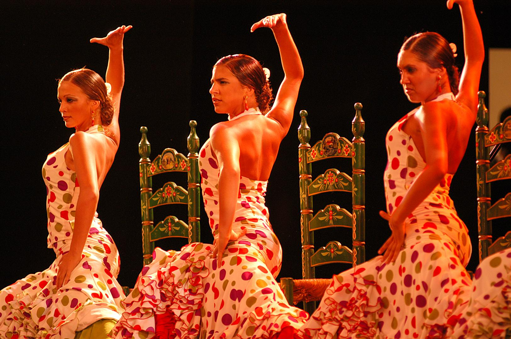

La cultura andalusa té les seves arrels en les influències que els diferents pobles han deixat després del seu pas per Andalusia al llarg dels segles.
A més la història i la geografia han contribuït igualment en la formació de la cultura actual.
El flamenc és un genere de música i dansa que es va originar ien Andalusia a partir del segle XVIII, té com a base la música la dansa andalusa i han influït els andalusos de etria gitana.
En Andalusia la història de la literatura castellana és molt important,en 1492 Antonio de Lebrija va publicar el celebri de gramàtica castellana, la primera d’una llengua vulgar a Europa.
